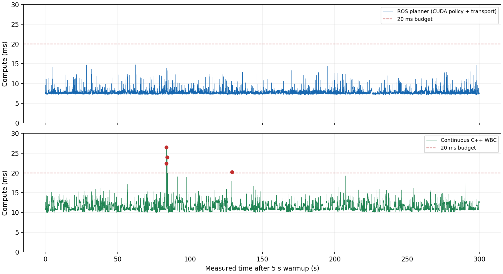

2026-10-17 23:59:07 – 2026-10-18 00:04:07 KST. 5초 예열 + 300초 측정. Orin Nano Super 25W, 일반 스케줄러·기본 CPU 배치. 실제 H533 USB 게이트웨이와 가상 센서 사용, 모터 비활성.
운용 중 보호 정지 0건. 엄격한 통합 판정은 미통과.
명령 60,000개·계획 15,000개가 완전하지만, 피드백 수신 구간에 잡힌 표본은 59,997/60,000개로 기존 허용치 ±2개를 넘었다. WBC도 15,000회 중 4회가 20ms를 초과했다. 수정 후 1시간 연속 검증이나 실모터 검증을 완료한 결과는 아니다.
CUDA 정책의 고정 크기 연산을 CUDA Graph로 재실행한다. 학습 체크포인트·관측 순서·FP32 계산·비유한 출력 검사는 유지했다. 별도 실제 학습 모델 32개 입력 비교에서 eager/graph 행동 출력 최대 차이 0이었다. CPU 경로, 반복 입력·리셋·출력 보존, 비유한 출력 거부를 실제 Jetson에서 시험했다.
벤치마크의 CSV·JSONL 파일 기록과 진행 표시를 주기 경로에서 옮겼다. 표본은 고정 크기 숫자 배열에 보관하고 종료 시 저장한다. 자동 GC는 활성 상태로 유지하며 준비된 힙은 예열 후 freeze한다. 측정 중 기록된 1ms 이상 GC pause는 없었다. 별도 호스트 1시간 분량 저장 실험은 메모리 구조 검사이며 실제 1시간 운용이 아니다.
후속 기록 저장 검사에서는 자식 종료 상태·시간 초과·필수 파일·행 수를 확인한 후 결과를 생성한다. 실패 시 성공 판정을 취소하고 부모도 실패한다. 첫 정책 worker dump 대기만 늘리고, 시간 초과 시 프로세스 그룹을 정리한다. 이 종료 경로 수정은 아래 5분 실행 이후 적용했으며 별도 짧은 실기 시험 결과는 cleanup audit에 기록했다.
| 구간 | 표본 | 평균 ms | p99 ms | 최대 ms | 20ms 초과 |
|---|---|---|---|---|---|
| ROS 계획 계산 | 15,000 | 7.733 | 10.658 | 15.854 | 0 |
| CUDA 정책 worker | 15,000 | 5.292 | 7.055 | 13.188 | 0 |
| C++ WBC | 15,000 | 11.267 | 14.144 | 26.483 | 4 |

측정 명령 60,000/60,000개, 평균 200.002Hz. 명령 계산 평균 1.464ms, 명령 도착 간격 최대 14.583ms. 사용 계획의 최대 source age는 35ms로, 기존 50ms 보호 조건을 유지했다. 기록의 receipt/source age 보호 조건을 완화하지 않았다.
예열을 포함한 H533 명령 60,997개를 모두 수신·수락했다. UART 오류·수신 오버플로·송신 오류·missed tick·motor apply는 모두 0이다. 피드백 source tick은 연속이며 수신 속도는 199.991Hz다. 59,997개라는 수신 창 표본 수에 대해서는 원본 실패 판정을 유지했다. 보드와 호스트 시간 기준 차이가 원인 후보이나, 이 로그만으로 클럭 오차를 확정하지 않는다.
센서 발행을 종료한 후 마지막 계획이 50ms를 넘으면서 STOP이 발생했다. 측정 중 fault 0건과 구분해 원본 로그에 보존했다. 원시 데이터 전체 연속성·행 수·유한값·STM 카운터를 독립 감사했고, 제어 관련 자식 프로세스가 종료됐음을 원격으로 확인했다.
| 실행 | 평균 ms | p99 ms | 최대 ms | 평균 thread CPU ms |
|---|---|---|---|---|
| eager | 6.781 | 6.990 | 9.807 | 6.745 |
| graph | 2.116 | 2.741 | 2.976 | 1.236 |
위 수치는 실제 ROS·WBC 동시 실행 시간과 별개인 정책 단독 비교다. 실제 부하 조건에서는 위 5분 표의 worker/계획 측정값을 사용한다.
가상 nominal 관절·깊이·접촉 정보를 입력하고 MCU 피드백은 0값 fixture를 쓴다. WBC는 별도 프로세스로 연속 계산한 부하 시험이다. 실제 센서 기반 폐루프 제어, 모터 구동 및 G474 검증을 의미하지 않는다.